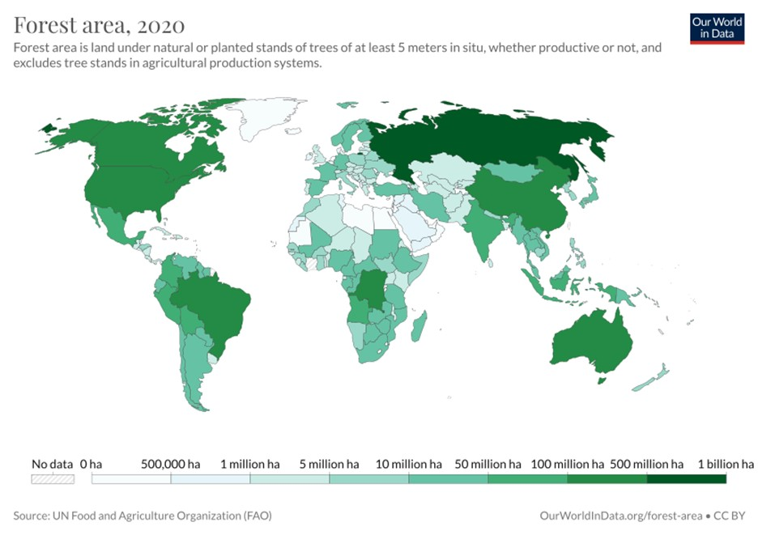

Protected forests are forests that mitigate or prevent the impact of a natural hazard, including a rockfall, avalanche, erosion, landslide, debris flow or flooding on people and their assets in mountainous areas. A protected forest generally covers the sloping area between a hazard potential (e.g. an unstable rock cliff or an avalanche release zone) and the endangered or exposed assets.
The conservation of forests Is Important, both for the existence of human being and protection of renewable natural resources. Forest ecosystem has an extended value-chain In the economy by providing a range of direct and indirect goods and services that benefit humankind in numerous ways. This includes livelihood support – not only to the communities living in and around forest, but also to those located far away from forests. Thus, forestry products and services play a significant but often unrecognized role at multiple scales of human organization-from households, community at the macro level to overall human civilization inhabiting the earth biosphere.
The most crucial steps that are required to be taken as soon as possible to protect the forests are as follows:
- Afforestation
- Development of wastelands
- Replantation and reforestation of existing forests
- Forest settlement
- Restriction on grazing
- Encouraging use of wood substitutes and supplying alternative fuels
- Doing away with forest contractors
- Discouraging monopoly